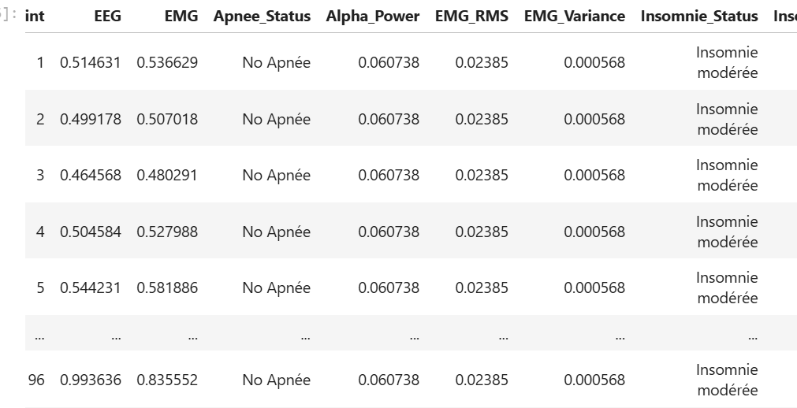

Calcul et Interprétation des Troubles du Sommeil à partir des Signaux EEG/EMG
Ce document décrit les algorithmes de détection des troubles du sommeil basés sur l’analyse des signaux EEG et EMG.
Méthodologie de Détection
Filtrage des Signaux
def bandpass_filter(signal, lowcut, highcut, fs):
"""Filtre passe-bande pour le prétraitement des signaux"""
nyquist = 0.5 * fs
low = lowcut / nyquist
high = highcut / nyquist
# Contrôle des plages de fréquence
low = max(0.001, min(low, 0.999))
high = max(low + 0.001, min(high, 0.999))
b, a = butter(4, [low, high], btype='band')
return filtfilt(b, a, signal)
Explications: - Utilise un filtre Butterworth d’ordre 4 pour éliminer les artefacts hors bande - filtfilt applique un filtrage sans déphasage (forward-backward filtering) - Contrôle rigoureux des fréquences coupures pour éviter des valeurs invalides - Plage typique : 0.5-45Hz pour EEG (conserve les ondes delta à gamma) - Plage typique : 10-100Hz pour EMG (capture l’activité musculaire caractéristique)
Détection de l’Apnée du Sommeil
def detect_apnea(eeg, emg, fs):
"""Détection basée sur la puissance alpha EEG et l'activité EMG"""
# Filtrage des signaux
eeg_filtered = bandpass_filter(eeg, 0.5, 45, fs)
emg_filtered = bandpass_filter(emg, 10, 100, fs)
# Analyse spectrale EEG
f_eeg, pxx_eeg = welch(eeg_filtered, fs=fs, nperseg=fs*2)
alpha_indices = np.where((f_eeg >= 8) & (f_eeg <= 13))
alpha_power = np.sum(pxx_eeg[alpha_indices])
# Analyse EMG
emg_rms = np.sqrt(np.mean(emg_filtered ** 2))
emg_variance = np.var(emg_filtered)
# Critères de décision
if (alpha_power > 0.3 and
emg_rms < np.percentile(emg_filtered, 25) and
emg_variance > 0.01):
return "Apnée"
else:
return "No Apnée"
Explications: - Critère EEG : Puissance alpha (8-13Hz) >30% indique un micro-éveil post-apnée - Critère EMG :
RMS faible (activité musculaire atonique)
Variance élevée (mouvements résiduels)
Seuils empiriques : Basés sur des études polysomnographiques standards
Fenêtre d’analyse : 2 secondes (fs*2 échantillons) pour la résolution fréquentielle
Spécificité : La combinaison alpha+EMG différencie l’apnée des autres événements
Détection de l’Insomnie
def detect_insomnia(eeg, emg, fs):
"""Détection basée sur les ratios spectraux EEG et l'activité EMG"""
# Analyse spectrale
f_eeg, pxx_eeg = welch(eeg_filtered, fs=fs, nperseg=fs*2)
# Calcul des puissances par bande
delta_power = np.sum(pxx_eeg[(f_eeg >= 0.5) & (f_eeg <= 4)])
beta_power = np.sum(pxx_eeg[(f_eeg >= 15) & (f_eeg <= 30)])
# Calcul des ratios
beta_delta_ratio = beta_power / delta_power if delta_power > 0 else 999
# Analyse EMG
emg_rms = np.sqrt(np.mean(emg_filtered ** 2))
emg_diff = np.diff(emg_filtered)
micro_arousal_count = np.sum(np.abs(emg_diff) > 3 * np.std(emg_diff)))
# Score d'insomnie
insomnia_score = 0
if (beta_power/total_power) > 0.25: insomnia_score += 1
if beta_delta_ratio > 1.5: insomnia_score += 1
if emg_rms > np.percentile(emg_filtered, 60): insomnia_score += 1
if micro_arousal_count > 3: insomnia_score += 1
# Classification
if insomnia_score >= 3: return "Insomnie sévère"
elif insomnia_score == 2: return "Insomnie modérée"
elif insomnia_score == 1: return "Insomnie légère"
else: return "Normal"
Explications: - Biomarqueurs EEG:
Ratio Beta/Delta élevé → hyperactivation corticale
Puissance beta >25% → activité cognitive persistante
Biomarqueurs EMG: - Tension musculaire élevée (percentile 60) - Micro-éveils fréquents (>3/min)
Score clinique: - 0-1 : Normal - 2 : Insomnie modérée (seuil clinique) - ≥3 : Insomnie sévère
Avantages : Capture à la fois les aspects physiologiques et moteurs de l’insomnie
Analyse par Fenêtres Temporelles
def analyze_signal_windows(df, fs=100, window_size=30):
"""Application des détections sur des fenêtres glissantes"""
samples_per_window = fs * window_size
result_df = df.copy()
for start_idx in range(0, len(df), samples_per_window):
end_idx = min(start_idx + samples_per_window, len(df))
eeg_window = df['EEG'].iloc[start_idx:end_idx].values
emg_window = df['EMG'].iloc[start_idx:end_idx].values
# Apnée (fenêtres de 5s)
if window_size == 5:
result = detect_apnea(eeg_window, emg_window, fs)
result_df.loc[start_idx:end_idx, 'Apnee_Status'] = result
# Insomnie (fenêtres de 30s)
elif window_size == 30:
result = detect_insomnia(eeg_window, emg_window, fs)
result_df.loc[start_idx:end_idx, 'Insomnie_Status'] = result
Pipeline Complet d’Analyse
def analyze_and_save_results(input_dataframe, output_file, fs=100):
"""Pipeline complet d'analyse et sauvegarde"""
# Analyse apnée (fenêtres de 5s)
df_apnee = analyze_signal_windows(input_dataframe, fs, 5)
# Analyse insomnie (fenêtres de 30s)
df_final = analyze_signal_windows(df_apnee, fs, 30)
# Statistiques
apnee_count = (df_final['Apnee_Status'] == 'Apnée').sum()
severe_insomnia = (df_final['Insomnie_Status'] == 'Insomnie sévère').sum()
# Sauvegarde
df_final.to_csv(output_file, index=False)
return {
'apnea_events': apnee_count,
'severe_insomnia': severe_insomnia,
'output_file': output_file
}
Interprétation Clinique
Les algorithmes implémentent les critères AASM (American Academy of Sleep Medicine) : - Apnée : Chute de ≥90% du flux respiratoire pendant ≥10s avec effort respiratoire - Insomnie : Latence d’endormissement >30min ou efficacité <85%
Les critères de détection sont basés sur:
Apnée du sommeil: - Puissance alpha EEG élevée (>30% de la puissance totale) - Activité EMG réduite (en dessous du 25ème percentile) - Variance EMG significative (>0.01)
Insomnie: - Ratio Beta/Delta > 1.5 - Puissance Beta > 25% de la puissance totale - Tension EMG élevée (au-dessus du 60ème percentile) - Micro-éveils fréquents (>3 par minute)
Visualisation des Résultats
{kind=link}
Les résultats sont sauvegardés dans un DataFrame avec les colonnes:
Apnee_Status: “Apnée” ou “No Apnée”Insomnie_Status: Niveau de sévéritéAlpha_Power: Puissance alpha normaliséeBeta_Delta_Ratio: Ratio des puissances spectralesEMG_RMS: Niveau d’activité musculaireMicro_Arousals: Nombre de micro-éveils détectés